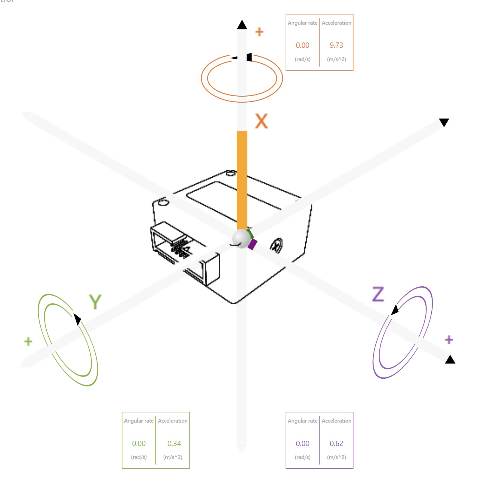

Project Summary


Background & Motivation
The rapid growth of UAVs in logistics, emergency response, inspection, and agriculture requires efficient, precise, and modular flight control systems. Most commercial systems are limited by power inefficiency and lack of customization. Our Low SWaP-C flight controller addresses these concerns with an STM32F405-based system designed for adaptability and modular testing.
IMU Math & Visualization
Acceleration is a strong indicator of IMU accuracy. Because gravity is constant (~9.81 m/s²), it provides a reference when the device is stationary. Our upcoming visualizations will compare raw acceleration data with expected baseline values. Velocity will be estimated by discrete integration in follow-up testing.

Testing Results
Sensor Reliability Testing – Acceleration
Each axis (X, Y, Z) was held stationary for 10 minutes with data logged through the STM32 while powered via USB.
X-Axis Test


// X-Axis Acceleration Logging Summary
// Average Reading: 9.7515 m/s²
// Max Reading: 9.8393 m/s²
// Min Reading: 9.6964 m/s²
// Data Size: ~4975 KB
/* Explanation text omitted for brevity */Y-Axis Test

// Y-Axis Acceleration Logging Summary
// Average Reading: 9.7881 m/s²
// Max Reading: 9.8012 m/s²
// Min Reading: 9.7345 m/s²
// Data Size: ~4772 KB
/* Explanation text omitted for brevity */Z-Axis Test

// Z-Axis Acceleration Logging Summary
// Average Reading: -9.789 m/s²
// Max Reading: -9.8107 m/s²
// Min Reading: -9.7536 m/s²
// Data Size: ~4916 KB
/* Explanation text omitted for brevity */Planned Testing – Linear Velocity
Velocity tests will involve calculated movement trials over known distances and durations, integrating acceleration over time.
X-Axis Velocity
// Placeholder - X Velocity Calc
print("Integrating IMU X for velocity")Y-Axis Velocity
// Placeholder - Y Velocity Calc
print("Integrating IMU Y for velocity")Z-Axis Velocity
// Placeholder - Z Velocity Calc
print("Integrating IMU Z for velocity")Flight Demos
This section showcases live flight demonstrations and testing of the Low SWaP-C Flight Controller integrated with drone platforms. Video clips, logs, and results will be included to highlight performance, stability, and control capabilities.
Team

| Name | Role | Contributions |
|---|---|---|
| Ethan Y. | Firmware | Worked on firmware testing and debugging... |
| Anthony A. | Firmware | Focused on firmware development and validation... |
| Tristin R. | Case Design | Designed the enclosure and mechanical layout... |
| Jeremiah H. | Hardware | Led hardware development including sensor integration... |
| Saif E. | Support | Assisted in technical research and ensured documentation accuracy... |